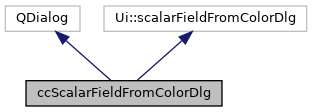

|
ACloudViewer
3.9.4
A Modern Library for 3D Data Processing
|
|
ACloudViewer
3.9.4
A Modern Library for 3D Data Processing
|
#include <ecvScalarFieldFromColorDlg.h>


Public Member Functions | |
| ccScalarFieldFromColorDlg (QWidget *parent=0) | |
| Default constructor. More... | |
| bool | getRStatus () |
| Returns if to export R channel as SF. More... | |
| bool | getGStatus () |
| Returns if to export G channel as SF. More... | |
| bool | getBStatus () |
| Returns if to export B channel as SF. More... | |
| bool | getCompositeStatus () |
| Returns if to export Composite channel as SF. More... | |
Dialog to choose 2 scalar fields (SF) and one operation for arithmetics processing
Definition at line 16 of file ecvScalarFieldFromColorDlg.h.
|
explicit |
Default constructor.
Definition at line 20 of file ecvScalarFieldFromColorDlg.cpp.
| bool ccScalarFieldFromColorDlg::getBStatus | ( | ) |
Returns if to export B channel as SF.
Definition at line 33 of file ecvScalarFieldFromColorDlg.cpp.
Referenced by ccEntityAction::sfFromColor().
| bool ccScalarFieldFromColorDlg::getCompositeStatus | ( | ) |
Returns if to export Composite channel as SF.
Definition at line 37 of file ecvScalarFieldFromColorDlg.cpp.
Referenced by ccEntityAction::sfFromColor().
| bool ccScalarFieldFromColorDlg::getGStatus | ( | ) |
Returns if to export G channel as SF.
Definition at line 29 of file ecvScalarFieldFromColorDlg.cpp.
Referenced by ccEntityAction::sfFromColor().
| bool ccScalarFieldFromColorDlg::getRStatus | ( | ) |
Returns if to export R channel as SF.
Definition at line 25 of file ecvScalarFieldFromColorDlg.cpp.
Referenced by ccEntityAction::sfFromColor().